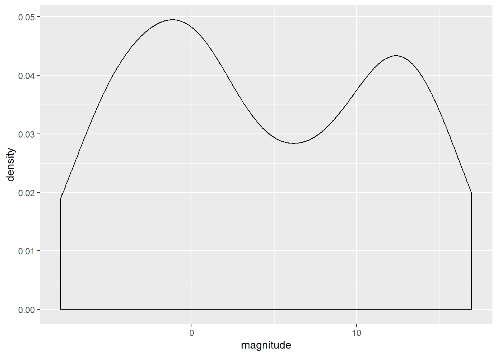
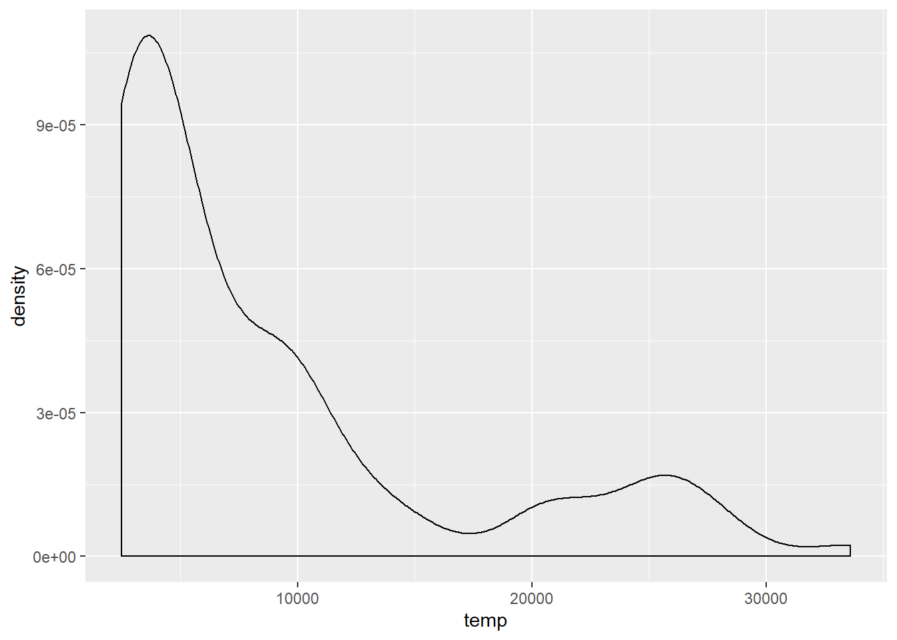
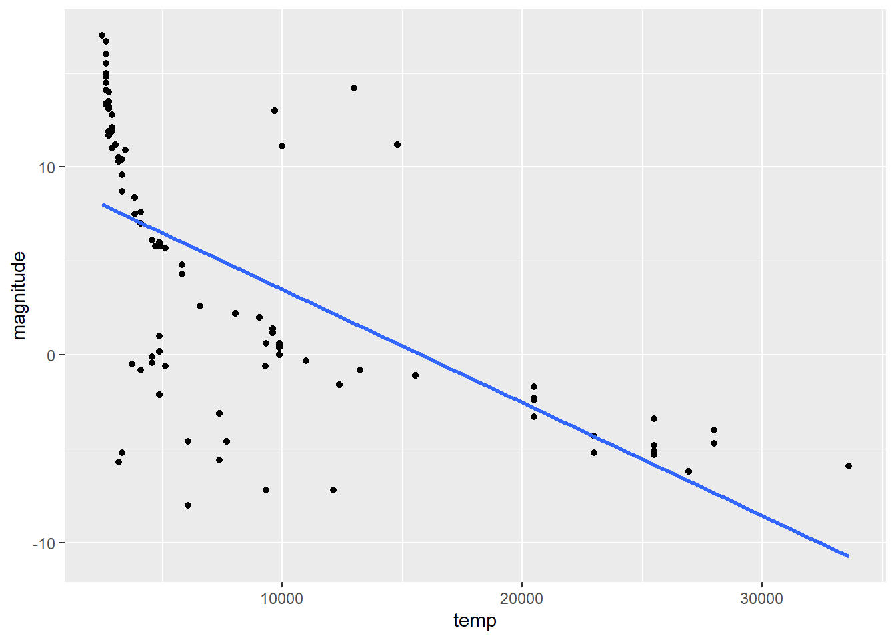
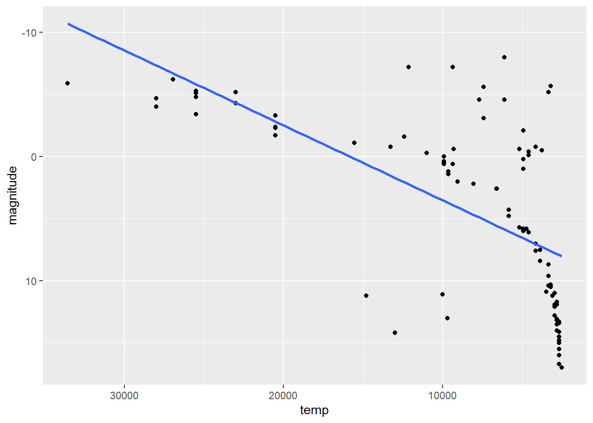
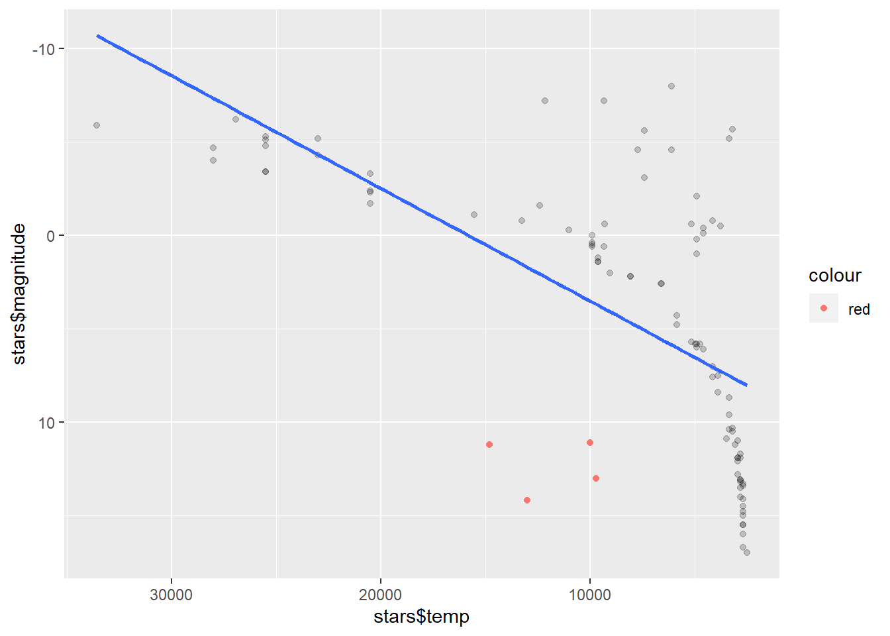
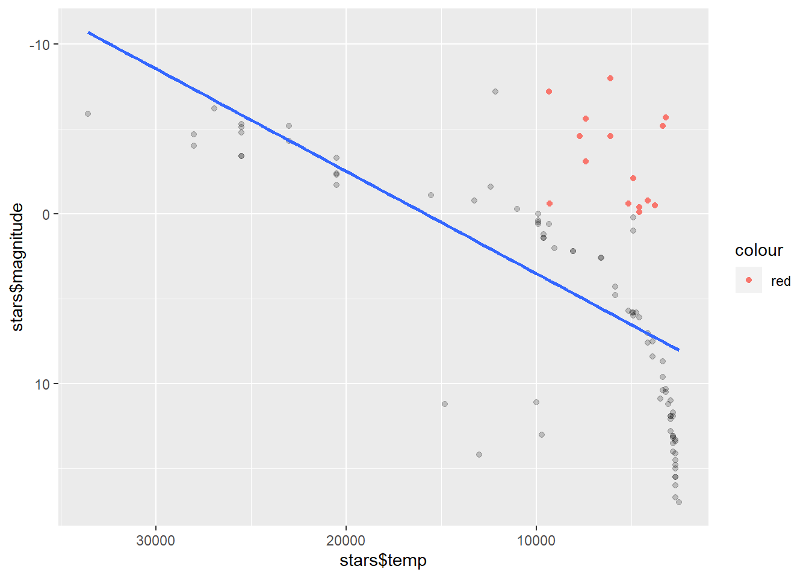
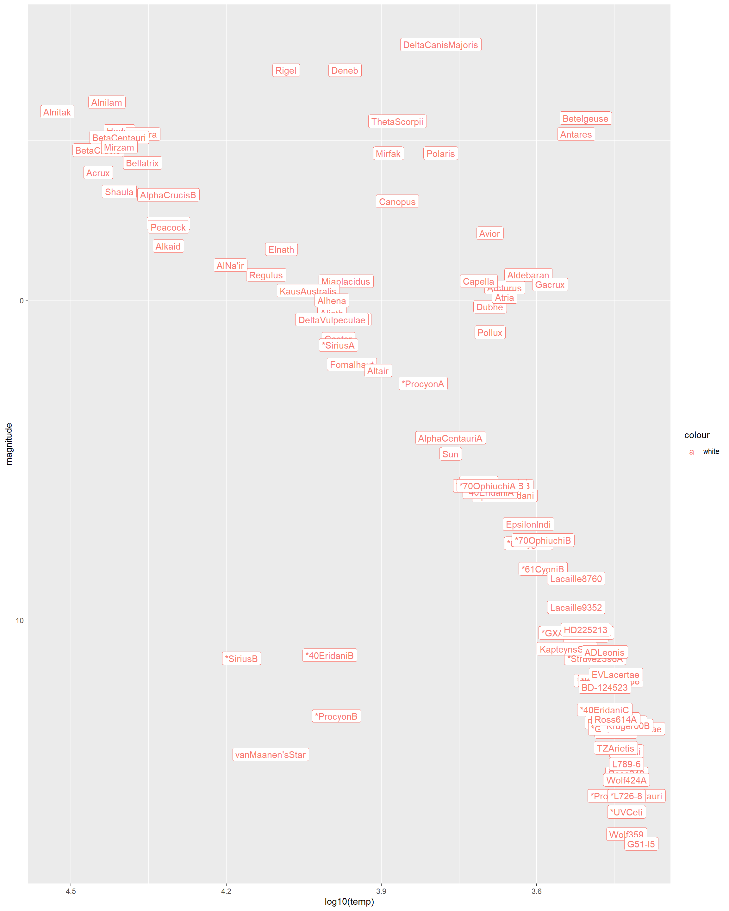
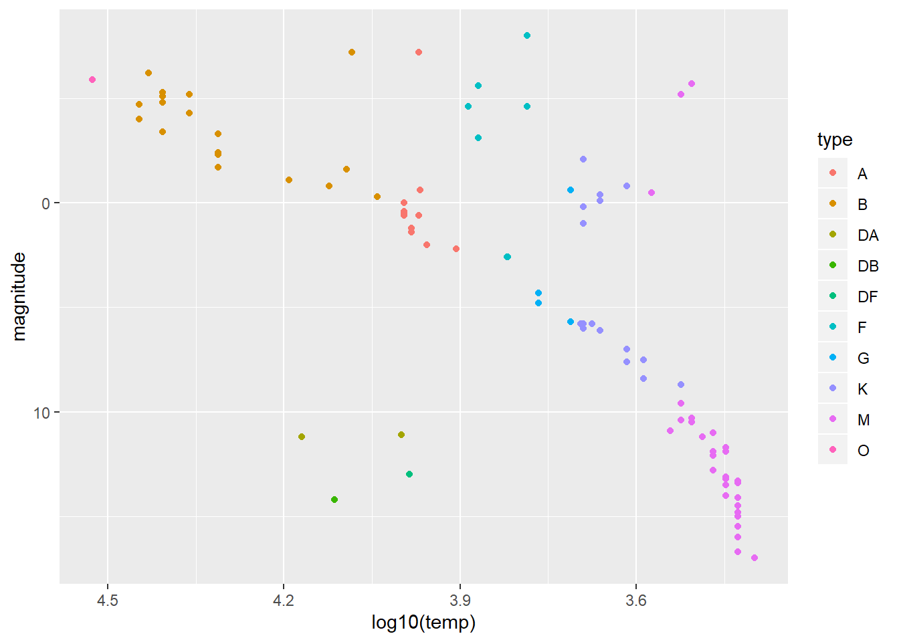

library(tidyverse)## -- Attaching packages --- tidyverse 1.3.0 --## v tibble 2.1.3 v stringr 1.4.0
## v readr 1.3.1 v forcats 0.4.0
## v purrr 0.3.3## -- Conflicts ------ tidyverse_conflicts() --
## x dplyr::filter() masks stats::filter()
## x dplyr::lag() masks stats::lag()
## x dplyr::select() masks MASS::select()library(dslabs)
data(stars)
options(digits = 3) # report 3 significant digitsstars <- as.data.frame(stars)mean(stars$magnitude)## [1] 4.26sd(stars$magnitude)## [1] 7.35stars%>%
ggplot(aes(magnitude))+
geom_density()
stars%>%
ggplot(aes(temp))+
geom_density()
stars%>%
ggplot(aes(temp, magnitude))+
geom_point()+
geom_smooth(method = "lm", se = FALSE)
stars%>%
ggplot(aes(temp, magnitude))+
geom_point()+
geom_smooth(method = "lm", se = FALSE)+
scale_x_continuous(trans='log10')+
scale_y_reverse()+
scale_x_reverse()## Scale for 'x' is already present. Adding another scale for 'x', which will
## replace the existing scale.
Here we are able to see that the brighter and hotter stars lie on the upper left side of the graph and the main sequence stars lie on the upper left center side almost close to the linear regression line.
wdwarf<- stars%>%
filter(magnitude > 10 & temp > 9000)
stars%>%
ggplot(aes(x = stars$temp, y = stars$magnitude))+
geom_point(alpha = 0.2)+
geom_point(data = wdwarf, aes(x = temp,
y = magnitude,
color = "red",))+
geom_smooth(method = "lm",
se = FALSE)+
scale_x_continuous(trans='log10')+
scale_y_reverse()+
scale_x_reverse()## Scale for 'x' is already present. Adding another scale for 'x', which will
## replace the existing scale.
As we observe there are only 4 white dwarfs within the dataset. They have higher temperature and lower magnitudes.
rgiant<- stars%>%
filter(magnitude < 0 & temp < 10000)
stars%>%
ggplot(aes(x = stars$temp, y = stars$magnitude))+
geom_point(alpha = 0.2)+
geom_point(data = rgiant, aes(x = temp,
y = magnitude,
color = "red",))+
geom_smooth(method = "lm",
se = FALSE)+
scale_x_continuous(trans='log10')+
scale_y_reverse()+
scale_x_reverse()## Scale for 'x' is already present. Adding another scale for 'x', which will
## replace the existing scale.
stars%>%
ggplot(aes(x = log10(temp), y = magnitude))+
geom_point()+
geom_label(aes(label = star,
color = "white",
))+
scale_y_reverse()+
scale_x_reverse()
Based on the output we can pin point that the lowest magnitude with the highest temperature would be the vanMaanen’s Star.
The two stars are Beetlejuice & Antares
stars%>%
ggplot(aes(log10(temp),magnitude, color = type))+
geom_point()+
scale_y_reverse()+
scale_x_reverse()
M type stars have the lowest temeprature.
O type stars have a high temperature.